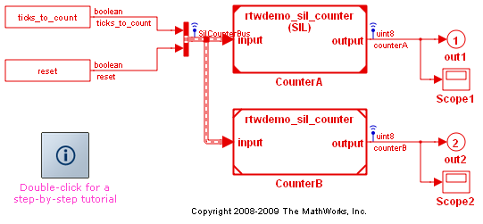

カスタム プロセッサーインザループ (PIL) 設定の作成
このデモでは、ターゲットの接続性 API を使用してターゲットの接続性設定を作成します。ターゲットの接続性設定によって、カスタムの組み込みハードウェアに対して PIL シミュレーションを実行できます。
次の方法を習得します。
* PIL をサポートするようにビルド プロセスを適応させる * PIL 実行可能ファイルをダウンロードし、ターゲット ハードウェアに対して実行を開始するために 使用するツールを設定する * ターゲット プロセッサに対する PIL シミュレーションをサポートするために使用されるホストとターゲット間の通信チャンネル を設定する
まず、SIL シミュレーションについて設定されているモデルから始めます。このデモでは、このモデルを PIL モードでシミュレートするためのターゲットの接続性設定を順を追って作成します。最初に、使用するとエラーが発生する不完全な PIL の接続性設定から始めましょう。これらのエラーを修正し、正常に機能する PIL 設定を作成する方法について学習します。エラーを修正するには、次の方法があります。
* MATLAB プログラムを編集してエラーをユーザー自身が修正する * デモで自動的に修正を行う
このデモでは、Real-Time Workshop Embedded Coder 製品が必要です。
rtwdemo_sil_pil_script、rtwdemo_rtiostream も参照してください。
目次
準備のために
% Later in this exercise you will add a directory to the path sl_customization_path = fullfile(matlabroot,... 'toolbox',... 'rtw',... 'rtwdemos',... 'pil_demo'); % If this directory is already on the path, remove it if strfind(path,sl_customization_path) rmpath(sl_customization_path) end % Reset any customizations sl_refresh_customizations
ソフトウェアインザループ (SIL) シミュレーションを使用した生成されたコードの検証
SIL のモデル設定をシミュレートします。ここでは、SIL を使用して、シミュレーション動作とこれに対応する生成されたコードの動作を比較することによって、ホスト プラットフォームについてコンパイルされた生成コードを検証します。
% Familiarization with Model block SIL; make sure the demo model is freshly % opened close_system('rtwdemo_sil_modelblock',0); close_system('rtwdemo_sil_counter',0) open_system('rtwdemo_sil_modelblock') % Note that the Model block CounterA has the text (SIL) displayed on it.This % shows that the model referenced by this Model block is configured for SIL % simulation. % Run a simulation of this system set_param('rtwdemo_sil_modelblock','StopTime','10'); sim('rtwdemo_sil_modelblock'); disp(' ') disp('Review the output displayed above.In particular, note that a new') disp('process was launched at the start of the simulation and killed at') disp('the end of the simulation.') disp(' ')
### Model reference SIM target (rtwdemo_sil_counter_msf.mexw32) for model rtwdemo_sil_counter is out of date because the binary information cache does not contain necessary information.This may indicate the slprj directory has been removed or a previous build of this model was not successful ### Updating model reference SIM target for model:rtwdemo_sil_counter ### Successfully updated the model reference SIM target for model:rtwdemo_sil_counter ### Model reference RTW target (rtwdemo_sil_counter.c) for model rtwdemo_sil_counter is out of date because rtwdemo_sil_counter.c does not exist ### Starting Real-Time Workshop build procedure for model:rtwdemo_sil_counter ### Successful completion of Real-Time Workshop build procedure for model:rtwdemo_sil_counter ### Preparing to start SIL simulation ... ### Starting SIL simulation for component:rtwdemo_sil_counter ### Stopping SIL simulation for component:rtwdemo_sil_counter Review the output displayed above.In particular, note that a new process was launched at the start of the simulation and killed at the end of the simulation.
ターゲットの接続性設定を使用した作業の開始
前の手順では SIL モードでシミュレーションを実行しました。次は、PIL のターゲットの接続性設定を使用した作業を開始する準備を行います。準備を行うには、変更対象となるスケルトン クラスのセットを使用して PIL のターゲットの接続性設定を作成します。
% Make a local copy of the skeleton classes with new package directory name src_dir = ... fullfile(matlabroot,'toolbox','rtw','rtw','+rtw','+mypil'); if exist(fullfile('.','+mypil'),'dir') rmdir('+mypil','s') end mkdir +mypil copyfile(fullfile(src_dir,'Launcher.m'), '+mypil'); copyfile(fullfile(src_dir,'TargetApplicationFramework.m'), '+mypil'); copyfile(fullfile(src_dir,'ConnectivityConfig.m'), '+mypil'); % Ensure the copied files are writable fileattrib('+mypil\*','+w'); % It is necessary to update one of the class files to reflect the change of % package name from rtw.mypil to mypil rtw.mypil.Utils.UpdateClassName(... './+mypil/ConnectivityConfig.m',... 'rtw.mypil',... 'mypil'); % Check that you now have a folder +mypil in the current directory including % three files Launcher.m, TargetApplicationFramework.m and ConnectivityConfig.m dir './+mypil'
. Launcher.m .. TargetApplicationFramework.m ConnectivityConfig.m
スケルトン クラスの表示
作成したディレクトリ内のスケルトン クラスは、ターゲットの接続性設定に使用する起点を表しています。これらのクラスのコメント化されたセクションによって、ホスト マシンで PIL を実行するためのターゲットの接続性設定が実装されます。このデモはすべてホスト マシンで実行しますが、組み込みターゲット ハードウェアの接続性設定は、同じ手順に従って作成できます。この演習の後半で、これらのコメント化されたセクションを編集して接続性設定をアクティブ化します。
% You can view these skeleton classes (do not make any changes at this % stage) edit mypil.Launcher edit mypil.TargetApplicationFramework edit mypil.ConnectivityConfig
sl_customization を使用したターゲットの接続性設定の登録
新しい PIL 設定を使用するには、sl_customization ファイルを指定する必要があります。sl_customization ファイルには作成した新しいターゲット接続性設定を登録し、この設定を使用するために満たさなければならない条件を指定します。このファイルで指定する条件には、システム ターゲット ファイルの名前と Hardware Implementation 設定を含めることができます。
% You can view the sl_customization file (for the demo there is no need to % make any changes to this file edit(fullfile(sl_customization_path,'sl_customization.m')) % Add the sl_customization directory to the path and refresh the % customizations addpath(sl_customization_path); sl_refresh_customizations;
スケルトン設定クラスを使用したシミュレーションの実行
デモ モデルは必ず直前に開いてください。モデルを閉じた後、再び開いてください。そうしないと、更新された設定クラスが選択されません。
close_system('rtwdemo_sil_modelblock',0) open_system('rtwdemo_sil_modelblock') set_param('rtwdemo_sil_modelblock/CounterA','SimulationMode','processor-in-the-loop (pil)'); % Attempt to run the simulation set_param('rtwdemo_sil_modelblock','StopTime','10'); try sim('rtwdemo_sil_modelblock'); catch exceptionObj disp(' ') disp('What errors occurred? Review the error message above. The error') disp('message should indicate that there are some undefined functions:') disp('rtIOStreamOpen, rtIOStreamSend, rtIOStreamRecv. These are the') disp('names of functions needed by the PIL application running on') disp('the target; they are needed to communicate with the host machine.') disp('You must provide an implementation of these functions for your') disp('target hardware') disp(' '); end
### Checking for structural changes in rtwdemo_sil_counter because the model reference rebuild option is set to 'If any changes detected'.Structural changes will cause the model reference SIM target to be rebuilt
### Checking for structural changes in model reference SIM target for model:
rtwdemo_sil_counter### The Model Reference SIM target for rtwdemo_sil_counter is up-to-date because no functional changes exist in the referenced model.
### Checking for structural changes in rtwdemo_sil_counter because the model reference rebuild option is set to 'If any changes detected'.Structural changes will cause the model reference RTW target to be rebuilt
### Starting Real-Time Workshop build procedure for model:rtwdemo_sil_counter
### The Model Reference RTW target for rtwdemo_sil_counter is up-to-date because no functional changes exist in the referenced model.
### Connectivity configuration for referenced model "rtwdemo_sil_counter":<a href="matlab:targets_hyperlink_manager('run',5);">My PIL Example</a> ###
### Preparing to start PIL simulation ...
Setting environment for using Microsoft Visual Studio 2008
(If you have another version of Visual Studio or Visual C++ installed and wish
to use its tools from the command line, run vcvars32.bat for that version.)
Microsoft (R) Program Maintenance Utility Version 9.00.30729.01
Copyright (C) Microsoft Corporation.All rights reserved.
### Compiling B:\matlab\toolbox\rtw\targets\pil\c\pil_interface_lib.c
cl -c -DCRTAPI1=_cdecl -DCRTAPI2=_cdecl -nologo -GS -D_X86_=1 -DWIN32 -D_WIN32 -W3 -D_WINNT -D_WIN32_WINNT=0x0500 -DNTDDI_VERSION=0x05000000 -D_WIN32_IE=0x0500 -DWINVER=0x0500 -D_MT -MT /wd4996 /fp:precise /Od /Oy- -DMODEL=rtwdemo_sil_counter -DNUMST=1 -DNCSTATES=0 -DMAT_FILE=0 -DINTEGER_CODE=0 -DONESTEPFCN=1 -DTERMFCN=0 -DHAVESTDIO -DMULTI_INSTANCE_CODE=0 -DMT=0 B:\matlab\toolbox\rtw\targets\pil\c\pil_interface_lib.c
pil_interface_lib.c
### Compiling pil_interface.c
cl -c -DCRTAPI1=_cdecl -DCRTAPI2=_cdecl -nologo -GS -D_X86_=1 -DWIN32 -D_WIN32 -W3 -D_WINNT -D_WIN32_WINNT=0x0500 -DNTDDI_VERSION=0x05000000 -D_WIN32_IE=0x0500 -DWINVER=0x0500 -D_MT -MT /wd4996 /fp:precise /Od /Oy- -DMODEL=rtwdemo_sil_counter -DNUMST=1 -DNCSTATES=0 -DMAT_FILE=0 -DINTEGER_CODE=0 -DONESTEPFCN=1 -DTERMFCN=0 -DHAVESTDIO -DMULTI_INSTANCE_CODE=0 -DMT=0 pil_interface.c
pil_interface.c
### Compiling B:\matlab\toolbox\rtw\targets\pil\c\pil_rtio_data_stream.c
cl -c -DCRTAPI1=_cdecl -DCRTAPI2=_cdecl -nologo -GS -D_X86_=1 -DWIN32 -D_WIN32 -W3 -D_WINNT -D_WIN32_WINNT=0x0500 -DNTDDI_VERSION=0x05000000 -D_WIN32_IE=0x0500 -DWINVER=0x0500 -D_MT -MT /wd4996 /fp:precise /Od /Oy- -DMODEL=rtwdemo_sil_counter -DNUMST=1 -DNCSTATES=0 -DMAT_FILE=0 -DINTEGER_CODE=0 -DONESTEPFCN=1 -DTERMFCN=0 -DHAVESTDIO -DMULTI_INSTANCE_CODE=0 -DMT=0 B:\matlab\toolbox\rtw\targets\pil\c\pil_rtio_data_stream.c
pil_rtio_data_stream.c
### Linking ...
B:\matlab\sys\perl\win32\bin\perl B:\matlab\rtw\c\tools\mkvc_lnk.pl rtwdemo_sil_counter.lnk pil_interface_lib.obj pil_interface.obj pil_rtio_data_stream.obj
link /RELEASE /INCREMENTAL:NO /NOLOGO -subsystem:console,5.0 kernel32.lib ws2_32.lib mswsock.lib advapi32.lib libcpmt.lib ..\rtwdemo_sil_counter_rtwlib.lib @rtwdemo_sil_counter.lnk @rtwdemo_sil_counter_ref.rsp -out:rtwdemo_sil_counter.exe
pil_rtio_data_stream.obj :error LNK2019:unresolved external symbol _rtIOStreamOpen referenced in function _pilInit
pil_rtio_data_stream.obj :error LNK2019:unresolved external symbol _rtIOStreamClose referenced in function _pilTerminateComms
pil_rtio_data_stream.obj :error LNK2019:unresolved external symbol _rtIOStreamSend referenced in function _pilRtIOStreamSend
pil_rtio_data_stream.obj :error LNK2019:unresolved external symbol _rtIOStreamRecv referenced in function _pilReadData
LIBCMT.lib(crt0.obj) :error LNK2019:unresolved external symbol _main referenced in function ___tmainCRTStartup
rtwdemo_sil_counter.exe :fatal error LNK1120:5 unresolved externals
NMAKE :fatal error U1077:'"c:\program files\microsoft visual studio 9.0\VC\BIN\link.EXE"' :return code '0x460'
Stop.
The make command returned an error of 2
'An_error_occurred_during_the_call_to_make' is not recognized as an internal or external command,
operable program or batch file.
What errors occurred?Review the error message above.The error
message should indicate that there are some undefined functions:
rtIOStreamOpen, rtIOStreamSend, rtIOStreamRecv.These are the
names of functions needed by the PIL application running on
the target; they are needed to communicate with the host machine.
You must provide an implementation of these functions for your
target hardware
ターゲット側通信ドライバーの確認
rtiostream_tcpip.c ファイルを表示します (変更はしないでください)。
rtiostreamtcpip_dir=fullfile(matlabroot,'rtw','c','src','rtiostream',... 'rtiostreamtcpip'); edit(fullfile(rtiostreamtcpip_dir,'rtiostream_tcpip.c')) % Scroll down to the end of this file and note that it file contains an % implementation of the functions rtIOStreamOpen rtIOStreamSend, rtIOStreamRecv % that were noted as 'undefined' in the error reported above % To fix the error message above, this file must be added to the build.
接続性設定へのターゲット側通信ドライバーの追加
ビルドに含める追加ファイルを設定するクラスは mypil.TargetApplicationFramework です。このクラスをエディターで開きます。
edit(which('mypil.TargetApplicationFramework')) % Review the commented lines ending with %UNCOMMENT.What files will be % added to the build when these lines are uncommented? % Once you have completed this review, you can use the MATLAB Editor menu % command Text->Uncomment to uncomment the lines ending with %UNCOMMENT.You can % make these changes manually or they will be performed automatically in the % next step.
ターゲット側通信ドライバーの使用
% Automatically uncomment sections in the file (if not already done manually) rtw.mypil.Utils.Uncomment(fullfile('./+mypil/TargetApplicationFramework.m')); % Attempt to run the simulation close_system('rtwdemo_sil_modelblock',0) open_system('rtwdemo_sil_modelblock') set_param('rtwdemo_sil_modelblock/CounterA','SimulationMode','processor-in-the-loop (pil)'); set_param('rtwdemo_sil_modelblock','StopTime','10'); try sim('rtwdemo_sil_modelblock'); catch exceptionObj disp(' ') disp(exceptionObj.getReport) disp(' ') disp('What errors occurred? Review the error message above. The error') disp('message should indicate that there was a communications failure') disp('between the host and target. This is the error that occurs if') disp('the target application has not actually been launched. Was there') disp('any indication that a process for the PIL executable was started?') disp(' ') end
### Checking for structural changes in rtwdemo_sil_counter because the model reference rebuild option is set to 'If any changes detected'.Structural changes will cause the model reference SIM target to be rebuilt
### Checking for structural changes in model reference SIM target for model:rtwdemo_sil_counter
### The Model Reference SIM target for rtwdemo_sil_counter is up-to-date because no functional changes exist in the referenced model.
### Checking for structural changes in rtwdemo_sil_counter because the model reference rebuild option is set to 'If any changes detected'.Structural changes will cause the model reference RTW target to be rebuilt
### Starting Real-Time Workshop build procedure for model:rtwdemo_sil_counter
### The Model Reference RTW target for rtwdemo_sil_counter is up-to-date because no functional changes exist in the referenced model.
### Connectivity configuration for referenced model "rtwdemo_sil_counter":<a href="matlab:targets_hyperlink_manager('run',5);">My PIL Example</a> ###
### Preparing to start PIL simulation ...
### Starting application:slprj\ert\rtwdemo_sil_counter\pil\rtwdemo_sil_counter.exe
Error using ==> rtwdemo_custom_pil at 197
Error due to multiple causes.
Error in ==> evalmxdom>instrumentAndRun at 83
text = evalc(evalstr);
Error in ==> evalmxdom at 21
[data,text,laste] = instrumentAndRun(file,cellBoundaries,imageDir,imagePrefix,options);
Error in ==> publish at 159
dom = evalmxdom(file,dom,cellBoundaries,prefix,imageDir,outputDir,options);
Error in ==> publish_demos at 996
try, publish('rtwdemo_custom_pil',getappdata(0,'opts')); catch demoE, fprintf('%s%s%s',char(10),getReport(demoE,'extended','hyperlinks','off'),char(10)); end
Caused by:
Error using ==> rtwdemo_custom_pil at 197
Error in 'rtwdemo_sil_modelblock/TmpSFcnForModelReference_CounterA' while executing C MEX S-function 'rtwdemo_sil_counter_psf', (mdlStart), at time 0.0.
Error using ==> rtwdemo_custom_pil at 197
An error occurred while calling into the SIL or PIL target connectivity implementation.
Error using ==> rtwdemo_custom_pil at 197
Communications error: failed to send data to the target.
Error using ==> rtwdemo_custom_pil at 197
Error in 'rtwdemo_sil_modelblock/TmpSFcnForModelReference_CounterA' while executing C MEX S-function 'rtwdemo_sil_counter_psf', (mdlTerminate), at time 0.0.
Error using ==> rtwdemo_custom_pil at 197
An error occurred while calling into the SIL or PIL target connectivity implementation.
Error using ==> rtwdemo_custom_pil at 197
Communications error: failed to send data to the target.
What errors occurred?Review the error message above.The error
message should indicate that there was a communications failure
between the host and target.This is the error that occurs if
the target application has not actually been launched.Was there
any indication that a process for the PIL executable was started?
PIL 実行可能ファイルを起動するコードの実装
PIL 実行可能ファイルを起動するためのツールを設定するクラスは mypil.Launcher です。このクラスをエディターで開いてください。
edit(which('mypil.Launcher')) % Review the commented lines ending with %UNCOMMENT.Note the method % setArgString that allows additional command line parameters to be % supplied to the executable; these parameters may include a TCP/IP % port number; for implementation on an embedded processor, it could be % more difficult to supply start-up parameters and you may choose to % have these settings hard-coded.Note the disp commands within the % setArgString method that display debugging information to indicate % when this method is called and the name of the calling file. % Remove the comment characters when you have understood the purpose of % the commented out sections
ランチャーを使用した PIL 実行可能ファイルの起動
% Automatically uncomment lines in the file rtw.mypil.Utils.Uncomment('./+mypil/Launcher.m') % Attempt to run the simulation close_system('rtwdemo_sil_modelblock',0) open_system('rtwdemo_sil_modelblock') set_param('rtwdemo_sil_modelblock/CounterA','SimulationMode','processor-in-the-loop (pil)'); set_param('rtwdemo_sil_modelblock','StopTime','10'); try sim('rtwdemo_sil_modelblock'); catch exceptionObj disp(' ') disp(exceptionObj.getReport) disp(' ') disp(' ') disp('What errors occurred? Carefully review the build log above. Was') disp('a process for the PIL application started successfully? You should') disp('see that although the PIL application started there was still a failure') disp('communicating with the target. Was the setArgString method called? If') disp('the setArgString method was not called, the host-target communications') disp('were not fully configured.') disp(' ') end
### Checking for structural changes in rtwdemo_sil_counter because the model reference rebuild option is set to 'If any changes detected'.Structural changes will cause the model reference SIM target to be rebuilt
### Checking for structural changes in model reference SIM target for model:rtwdemo_sil_counter
### The Model Reference SIM target for rtwdemo_sil_counter is up-to-date because no functional changes exist in the referenced model.
### Checking for structural changes in rtwdemo_sil_counter because the model reference rebuild option is set to 'If any changes detected'.Structural changes will cause the model reference RTW target to be rebuilt
### Starting Real-Time Workshop build procedure for model:rtwdemo_sil_counter
### The Model Reference RTW target for rtwdemo_sil_counter is up-to-date because no functional changes exist in the referenced model.
### Connectivity configuration for referenced model "rtwdemo_sil_counter":<a href="matlab:targets_hyperlink_manager('run',5);">My PIL Example</a> ###
### Preparing to start PIL simulation ...
### Starting application:slprj\ert\rtwdemo_sil_counter\pil\rtwdemo_sil_counter.exe
DEMO:startApplication
Started new process, pid = 2208
DEMO:stopApplication
Terminated process, pid = 2208
Error using ==> rtwdemo_custom_pil at 238
Error due to multiple causes.
Error in ==> evalmxdom>instrumentAndRun at 83
text = evalc(evalstr);
Error in ==> evalmxdom at 21
[data,text,laste] = instrumentAndRun(file,cellBoundaries,imageDir,imagePrefix,options);
Error in ==> publish at 159
dom = evalmxdom(file,dom,cellBoundaries,prefix,imageDir,outputDir,options);
Error in ==> publish_demos at 996
try, publish('rtwdemo_custom_pil',getappdata(0,'opts')); catch demoE, fprintf('%s%s%s',char(10),getReport(demoE,'extended','hyperlinks','off'),char(10)); end
Caused by:
Error using ==> rtwdemo_custom_pil at 238
Error in 'rtwdemo_sil_modelblock/TmpSFcnForModelReference_CounterA' while executing C MEX S-function 'rtwdemo_sil_counter_psf', (mdlStart), at time 0.0.
Error using ==> rtwdemo_custom_pil at 238
An error occurred while calling into the SIL or PIL target connectivity implementation.
Error using ==> rtwdemo_custom_pil at 238
Communications error: failed to send data to the target.
Error using ==> rtwdemo_custom_pil at 238
Error in 'rtwdemo_sil_modelblock/TmpSFcnForModelReference_CounterA' while executing C MEX S-function 'rtwdemo_sil_counter_psf', (mdlTerminate), at time 0.0.
Error using ==> rtwdemo_custom_pil at 238
An error occurred while calling into the SIL or PIL target connectivity implementation.
Error using ==> rtwdemo_custom_pil at 238
Communications error: failed to send data to the target.
What errors occurred?Carefully review the build log above.Was
a process for the PIL application started successfully?You should
see that although the PIL application started there was still a failure
communicating with the target.Was the setArgString method called?If
the setArgString method was not called, the host-target communications
were not fully configured.
通信チャンネルの設定
ホスト-ターゲット間の通信チャンネルの設定を行うには、mypil.ConnectivityConfig クラスを編集します。
edit(which('mypil.ConnectivityConfig')) % Review the lines ending with %UNCOMMENT.You should be able to identify % % * a call to the setArgString method of Launcher that configures % the target side of the communications channel % * configuration of the host-side of communications channel % % When you are satisfied, remove the comment characters.
新しく設定されたホスト-ターゲット間通信の使用
% Automatically uncomment lines in the file rtw.mypil.Utils.Uncomment('./+mypil/ConnectivityConfig.m') % Attempt to run the simulation close_system('rtwdemo_sil_modelblock',0) open_system('rtwdemo_sil_modelblock') set_param('rtwdemo_sil_modelblock/CounterA','SimulationMode','processor-in-the-loop (pil)'); set_param('rtwdemo_sil_modelblock','StopTime','10'); sim('rtwdemo_sil_modelblock'); disp(' ') disp('Review the output in the command window:were there any errors?There may be ') disp('errors if you tried making your own edits; in this case you should review your ') disp('changes and try to identify the problem.To diagnose and fix the problem, it ') disp('may be helpful to:') disp(' ') disp(' - use the command "netstat -a", from a command prompt on the host computer, to ') disp(' check for any TCP/IP connections left open on port 14646') disp(' - kill any zombie processes, on your host computer, called "rtwdemo_sil_counter"') disp(' ') disp('If the simulation ran successfully and there were no errors:congratulations, you') disp('have implemented a target connectivity configuration for PIL!You can now') disp('use the same APIs to implement a connectivity configuration for your own') disp('combination of embedded processor, download tool and communications channel.')
### Checking for structural changes in rtwdemo_sil_counter because the model reference rebuild option is set to 'If any changes detected'.Structural changes will cause the model reference SIM target to be rebuilt
### Checking for structural changes in model reference SIM target for model:rtwdemo_sil_counter
### The Model Reference SIM target for rtwdemo_sil_counter is up-to-date because no functional changes exist in the referenced model.
### Checking for structural changes in rtwdemo_sil_counter because the model reference rebuild option is set to 'If any changes detected'.Structural changes will cause the model reference RTW target to be rebuilt
### Starting Real-Time Workshop build procedure for model:rtwdemo_sil_counter
### The Model Reference RTW target for rtwdemo_sil_counter is up-to-date because no functional changes exist in the referenced model.
### Connectivity configuration for referenced model "rtwdemo_sil_counter":<a href="matlab:targets_hyperlink_manager('run',5);">My PIL Example</a> ###
EXECUTING METHOD SETARGSTRING
SETARGSTRING called from line 90 of ConnectivityConfig.m
### Preparing to start PIL simulation ...
### Starting application:slprj\ert\rtwdemo_sil_counter\pil\rtwdemo_sil_counter.exe
DEMO:startApplication
Started new process, pid = 7312
DEMO:stopApplication
Terminated process, pid = 7312
Review the output in the command window:were there any errors?There may be
errors if you tried making your own edits; in this case you should review your
changes and try to identify the problem.To diagnose and fix the problem, it
may be helpful to:
- use the command "netstat -a", from a command prompt on the host computer, to
check for any TCP/IP connections left open on port 14646
- kill any zombie processes, on your host computer, called "rtwdemo_sil_counter"
If the simulation ran successfully and there were no errors:congratulations, you
have implemented a target connectivity configuration for PIL!You can now
use the same APIs to implement a connectivity configuration for your own
combination of embedded processor, download tool and communications channel.
クリーン アップ
% Remove the path that was added temporarily rmpath(sl_customization_path) % Reset any customizations sl_refresh_customizations % Close the models close_system('rtwdemo_sil_modelblock',0) close_system('rtwdemo_sil_counter',0)